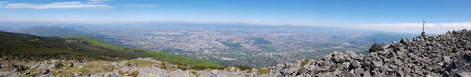
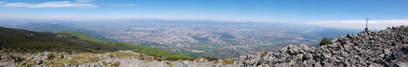

Фауна
Бозайници
Едрите бозайници са малко. Това се дължи предимно на незаконния лов. Вследствие на това от тези животни са останали едва няколко вида – благороден елен, сърна, дива свиня, кафява мечка и вълк като и техния брой не е особено голям. Освен тези видове се срещат още водни земеровки, белокоремна белозъбка, обикновен заек, обикновен сънливец, лисица, видра и други. Среща се също и дива котка, но броят на представителите на този вид е изключително малък.
Правени са опити да бъдат внесени няколко вида чуждестранни вида бозайници, но от тях не са останали представители в парка. От особена важност са установените 11 вида прилепи, което е много голям брой за такава малка територия. Най-голямо е разнообразието на прилепи в Боснешкия карстов район. Всички видове прилепи са защитени от Закона за защита на природата, но въпреки това техният брой е намалял през последните години. Това се дължи на развитието на туризма и превръщането на пещерите, които са естественият дом за прилепите, в туристически обекти.
Птици
Установени са 236 вида птици, от които 120 гнездят на територията на Витоша. Най-разпространена е сокерицата, която се среща най-вече из смърчовите гори. Там се срещат още жълтоглавото кралче, кръсточовката, боров синигер и други. От особено значение са видовете голям ястреб и малък ястреб, черен кълвач, пъстър кълвач, които са редки видове.
Други птици, които могат да бъдат наблюдавани, са керкенез, белоопашат мишелов, голям ястреб и др. В най-високите части се срещат балканска чучулига, планинска бъбрица, пъстър скален дрозд, сиво каменарче, домашна червеноопашка, белогуш дрозд и други. В по-ниските части, в широколистния и смесения пояс се среща лещарка.
От нощните птици се срещат горска улулица, горска ушата сова, домашна кукумявка, пернатонога кукумявка. От по-големите дневни – грабливи птици като скален орел, малък креслив орел, орел змияр, осояд и др. Те са много рядко срещани през гнездовия сезон, и то предимно в южните и югозападни дялове на планината.
Риби
Рибите не са много разпространени. Това се дължи на малкото количество водни басейни и на техния характер, който е предимно от тип планински поток. Най-разпространеният вид е речната пъстърва, за която бързите студени речни течения са характерно местообитание. В миналото са правени опити витошките водоеми да бъдат зарибени с вида балканска пъстърва, но в момента този вид риба почти не се среща.
Безгръбначни животни
Огромен е броят на безгръбначните животни. Витоша е обявена за територия от особено голямо значение по отношение опазването на бъзгръбначните животински видове. Голям е броят и на ендемичните и реликтни видове – близо 150 балкански и български ендемити и 85 реликтни вида. Срещат се около 300 вида безгръбначни, присъстващи в списъците на редките животни. Витоша е на второ място по разнообразие на подземните ендемични видове. Локални ендемити са три вида пещерни ракообразни и тук е единственото място, от където могат да бъдат извлечени сведения за тях. Почти всички пещерни безгръбначни са поставени под закрилата на закона за защита на природата, поради тяхната неприспособимост при промяна на местообитанието.
Най-разпространени от насекомите са видовете голям сечко, буков сечко и други. През последните години драстично е намалял броят на пеперудата аполона и учените предполагат, ча ако не бъдат взети мерки за нейното опазване в близките години, тя напълно ще изчезне.
 
